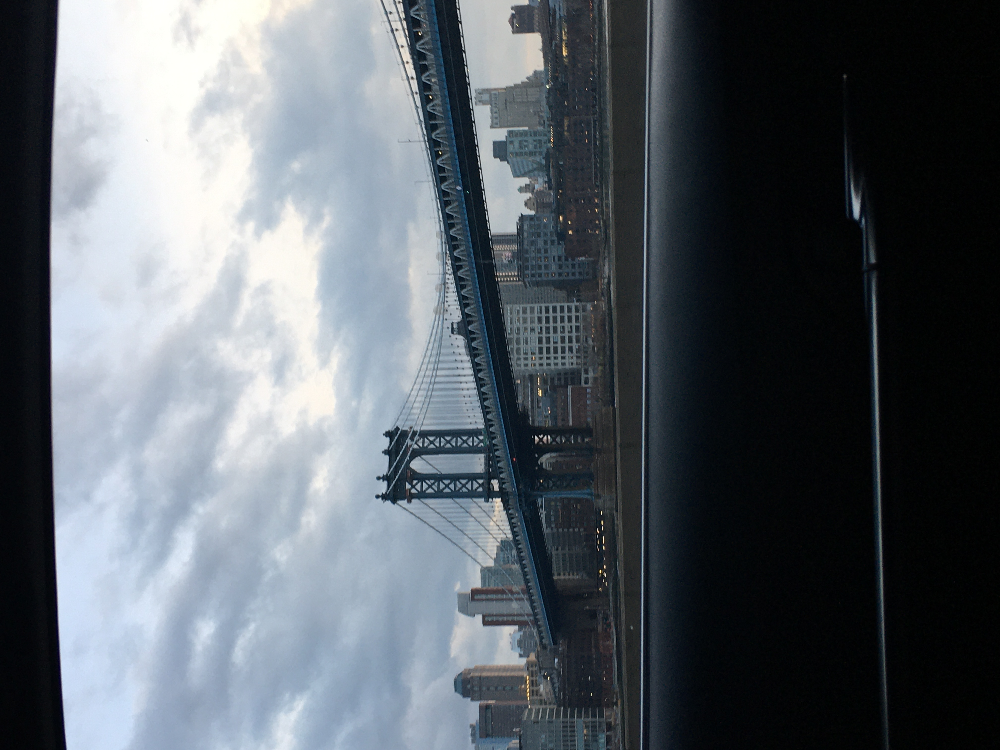
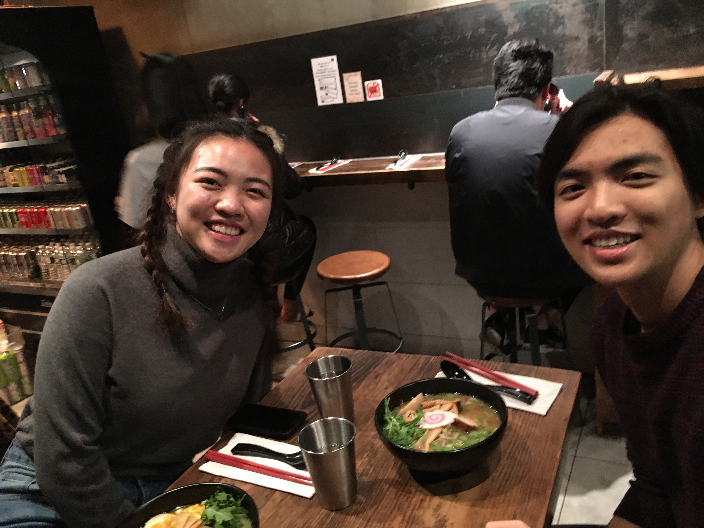

Summer 2020 at Aon
08/16/2020
Here's my interview and internship experience with Aon!
Aon
Aon provides five services, one of which is Data & Analytic Services. Within Data & Analytic Services, they have the Cyber Solutions line. We have three large groups in there!
Their LA office has a large DFIR team and two smaller Pen-Testing(lol p much non-existent) and Advisory teams. The DFIR team spends most of the time in office (bc they're handling/retrieving physical evidence) while the other two can work remotely.
The Interview Process
There are two rounds of interviews. I had a very pleasant experience! It's honestly very non-technical; they just want to know how interested you are in cybersecurity and how you think out loud.
I had an unforgettable experience! Aon was veryyy accomodating. They arranged the flights and stay, reimbursed any cab fees, and organized a whole tour day. Besides hustling the interview, I had time to relax in my hotel and hangout some hometown friends :-)
 Two weeks after my interview, I received a phone call with awesome news!
The Internship
Soo of course Ms. Rona made this experience virtual, which had its own set of pros and cons. One thing is for sure, I was really looking forward to returning to NYC for the 3-day intern orientation followed by a CTF!
8 Week Timeline
Week 1: Orientation + IT set up
Week 2: Receive CSA and Aon United project
Week 4: Midpoint check up + feedback
Week 8: Present projects
Most of your time is intended to be decided by you! Here's how I spent mine.
60% Working on Cyber Summer Associate Project w my partner from Washington D.C.
30% Examining cases and sitting on client calls
10% Networking/meeting w my manager or colleagues from different practices
I came in to learn about DFIR and Aon/Stroz Friedberg's culture.
DFIR is flipping intense!
My managers work overtime like crazy. The LA office historically works only in Digital Forensics (edisco) but we've been getting a lot of Incident Response (ransomware, threat hunts, business email compromises) cases recently.
I'm ngl, my managers always seem sooo tired but it is rewarding work. You are paid bonuses for your overtime and you are stopping cyber crime!
Windoze is everything. Lots of businesses use Windows = we report and remediate a lot of Windows machines. As a Linux gal, I heard so many unfamiliar words for forensic artifacts like shellbags, jumplists, userlists, and so on. Cyber CTF's help out!
Aon is lawful good.
Aon believes in putting their employees and clients first. During 'rona, Aon did not fire anyone; ironically the company works counter cyclical to pandemics. With companies demanding how to insure and virtual attacks at a high, people were more busy than ever! Anyways, they cut senior lvl and above's paychecks by 20% but gave it back alongside a 5% bonus!
We had three optional meetings per week that focus on professional and personal development. Topics range from like "Finance 101" to "How to ask for Feedback"! Wholesome stuff ya know.
#AonUnited we have weekly and monthly meetings connecting different regions and practices together. West Coast DFIR Cyber Huddle is definitely my favorite one!
Some personal takeaways from my experience: